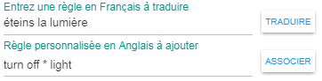

Règles par interface
Pour gérer les règles par l'interface, cliquez sur un périphérique puis sur l'onglet "Règles".
- Ce qu'il faut savoir:
- Les Widgets et les règles ne sont pas associés. Il n'est absolument pas nécessaire d'avoir l'un pour créer ou utiliser l'autre.
- Les règles sont associées aux clients A.V.A.T.A.R. Vous ne pouvez donc pas créer de règles pour des pièces eeDomus qui ne sont pas des clients A.V.A.T.A.R.
- A vous de bien nommer vos pièces eeDomus et y placer vos périphériques !
- Si 2 périphériques ont un nom identique (hors nom de pièce ajouté par eeDomus) mais sont dans des pièces différentes, vous pouvez choisir d'utiliser les mêmes règles pour les déclencher.
- Par exemple, si vous avez 2 périphériques avec un nom "Interrupteur" dans 2 pièces différentes, vous pouvez "lier" ces 2 périphériques pour qu'ils utilisent le même groupe de règles et donc pouvoir ainsi utiliser la règle "Allume la lumière" dans les 2 pièces.
- Il est donc judicieux de bien nommer vos périphériques dans l'application eeDomus
- A partir du moment où vous choisissez d'utiliser les mêmes règles et donc de lier ces règles à plusieurs périphériques, toutes les règles de tous les états possibles de ces périphériques deviennent communes à ces périphériques et une modification d'une de ces règles sera aussi commune.
- Vous pouvez choisir de créer spécialement un groupe de règles pour un périphérique si vous ne voulez pas qu'il partage ses règles avec d'autres périphériques.
- Pour un groupe de règles créé spécialement pour un périphérique, vous pouvez aussi, si vous le désirez, lui associer une fonction JavaScript qui sera ajoutée automatiquement par le plug-in dans le tableau d'actions de la fonction export.action() du fichier eeDomus.js. Ainsi ce périphérique pourra avoir son propre code JS.
L'onglet "Règles" est découpé en 6 parties:
- Étudier plus bas ces différentes parties pour mieux utiliser le générateur de règles.
- Le type de règle:
- 2 types sont possibles, cette information provient des informations connues du périphérique.
- Reçoit du périphérique une information à afficher (de type "GET")
- La règle sert à demander une information au périphérique, par exemple "Donne-moi la température".
- Exécute l'action de la règle sur le périphérique (de type "SET")
- La règle exécute une action sur le périphérique, par exemple "Allume la lumière"
- Le status de la règle:
Ce champ change en fonction du Type et du Status de la règle. 3 différents status peuvent être affichés:
Affichage |
Description |
|
Règle de type "GET":
Règle de type "SET":
|
Règle de type "GET":
Règle de type "SET":
|
|
Règle de type "GET":
Règle de type "SET":
Si vous laissez sur "Utiliser les mêmes règles":
Si vous cliquez sur "Créer des règles différentes", le champ de saisie de la fonction optionnelle apparaît: Ce champ est rempli automatiquement avec un nom de fonction, vous pouvez le changer ou le supprimer. Résultat après sauvegarde:
Si un nom de fonction a été entré:
Si le champ fonction est vide:
|

- Choisissez si la règle active une macro
Comme pour un widget, cochez "Peut activer une macro" si le périphérique contient des macros qui sont associées à la liste de valeurs (au moins une).
Voir le chapitre "Exécuter une macro" pour plus de précisions
- Les règles
Ce champ peut afficher:
- Uniquement la liste des règles (pour le type "GET")
- La liste des valeurs possibles et les règles associées (pour le type "SET")
Affichage |
Description |
Règle de type "GET": Règle de type "SET": |
Règle de type "GET":
Règle de type "SET":
|
Règle de type "GET": Règle de type "SET": |
Règle de type "GET":
Règle de type "SET":
|
Règle de type "GET":
Règle de type "SET": |
Règle de type "GET":
Règle de type "SET":
Dans les 2 cas: N'oubliez pas ! Vous devez cliquez sur "SAUVEGARDER" pour associer ces règles. Ce qui est affiché sont les règles existantes du périphérique de l'autre pièce mais pas encore pour celui-ci ! |

- Traduction et association de règle
Ce champ est une aide à la saisie pour valider et formater en NLP la règle à associer au périphérique.
Si le nom d'usage est connu (et pour un "SET", avec la valeur affichée), une phrase et sa traduction sont définies par défaut (Plus d'information sur cette possibilité au chapitre "Le fichier periphUsage")

- Entrez une phrase en Français
- Appuyez sur le bouton "TRADUIRE"
- Si la règle n'est pas utilisée par un plug-in A.V.A.T.A.R, elle est traduite et formatée pour pouvoir être associée sinon un message d'information apparaît pour vous le notifier.
- Vous pouvez vérifier le résultat du formatage et le modifier à votre convenance.
- Vous pouvez aussi entrer directement une règle en Anglais dans le champ "Associer" pour éviter la traduction si vous savez que votre règle est correcte.
- Appuyez sur le bouton "ASSOCIER"
- Si la règle n'est pas utilisée par un périphérique de la même pièce, elle est ajoutée dans la liste des règles pour le périphérique sinon un message d'information apparaît pour vous le notifier.
- Appuyer sur le bouton "SAUVEGARDER"
- La règle est associée au périphérique (type "GET") ou à la valeur affichée (type "SET")
- L'onglet "Règles" est mis à jour avec les nouvelles informations
- Répétez l'opération pour d'autres règles si vous le désirez
- Le bouton Supprimer
Particularités pour la suppression des règles:
- Si vous avez choisi de partager des règles entre plusieurs périphériques, vous ne pourrez choisir de supprimer la règle affichées qu'au dernier périphérique utilisant cette règle (sinon il ne pourrait plus l'utiliser). Avant le dernier qui l'utilise, vous supprimez toutes les règles de toutes les valeurs possibles pour le périphérique courant en même temps.
Créé avec HelpNDoc Personal Edition: Produire des livres Kindle gratuitement